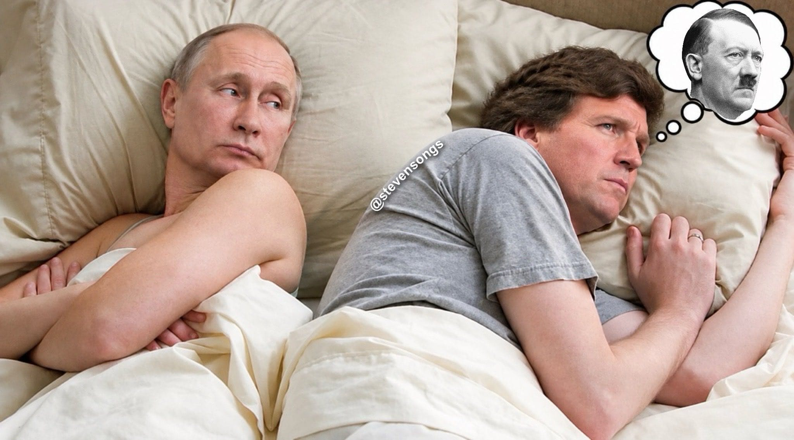

Bir silah olarak soru
Günümüzün en etkili dezenformasyonu bir yalan değil. Bir soru.
Şubat 2024'te Tucker Carlson Kremlin'de oturdu ve Vladimir Putin'in, Polonya'nın 1939'da "uzlaşmaz" davrandığını ve Hitler'e başka seçenek bırakmadığını anlatmasını hiç sözünü kesmeden dinledi. Yedi ay sonra Carlson, podcast yapımcısı Darryl Cooper'la yaptığı bir söyleşiyi tanıttı ve Cooper'ı muhtemelen "Amerika Birleşik Devletleri'ndeki en iyi ve en dürüst popüler tarihçi" olarak niteledi. Cooper'ın tezi, İkinci Dünya Savaşı'nın baş kötüsünün Hitler değil Churchill olduğuydu.
İkisinin de Hitler'in haklı olduğunu kanıtlaması gerekmiyordu. Meseleyi hâlâ tartışmaya açıkmış gibi hissettirmeleri yeterliydi. Suçlu Polonya mıydı? Asıl savaş kışkırtıcısı Churchill miydi? Nazi Almanyası'nı yenmek gerçekten buna değer miydi?
Soru sormak hiçbir şeye mal olmaz; cevaplamak ise çok pahalıya patlar. Soruyu soran hiçbir pozisyonu savunmaz, hiçbir kanıt sunmaz ve asla yanılmış olamaz. Kremlin röportajının ardından Polonya Dışişleri Bakanlığı, Putin'in tarih dersine karşı on maddelik bir düzeltme yayımlamak zorunda kaldı. Soru saniyeler sürdü. Cevap için bir bakanlığın seferber olması gerekti.
Hiçbir şey doğru olmadığında
Gerçek tarih karmaşıktır ve dürüst tarihçiler bunu açıkça söyler. Polonya'nın iki savaş arası hükümetleri ciddi hatalar yaptı. İngiltere ve Fransa yıllarca Hitler'e taviz verdi. Versay geride acı bir miras bıraktı. Bugün 1939 hakkında dünyaya ders veren devletin selefi Sovyetler Birliği ise o Ağustos'ta Hitler'le bir pakt imzaladı, Polonya'yı aralarında paylaştıran gizli bir protokolüyle birlikte. Ardından, Almanya'nın batıdan saldırmasından on altı gün sonra Polonya'yı doğudan işgal etti. Putin bu kısmı anlatmadı.
Bunların hiçbiri özü değiştirmez. Nazi Almanyası Polonya'yı bir devlet olarak yeryüzünden silmek için işgal etti. Polonya Yahudilerinin imhasını ve Slavlarının boyunduruk altına alınmasını planladı ve bütün bir kıtaya yayılan soykırımcı bir imparatorluk kurdu. Kenarlardaki karmaşıklık, merkezi pazarlığa açık hale getirmez.
Ama yerleşik her olgu açık bir soruya dönüştüğünde ahlaki harita tersyüz olur. Saldırgan kurban, kurban ise kışkırtıcı olur. Diktatörler yanlış anlaşılmış devlet adamlarına, kendini savunan demokrasiler savaş çığırtkanlarına dönüşür. 1939 için Polonya'yı suçlayan mantık, 2022 için Ukrayna'yı suçlayan mantığın ta kendisidir.
Yeterince ileri götürüldüğünde bu mantık geride hiç tarih bırakmaz, yalnızca birbiriyle yarışan anlatılar bırakır. Ortak bir doğrunun olmadığı bir dünya ise en çok güce sahip olanındır. Batı'nın düşmanlarının istediği dünya budur, çünkü kazanabilecekleri tek dünya odur.
Tek kalıp, çok hedef
Bu hamleyi bir kez gördüğünüzde her yerde görürsünüz. Aşılar insanlığın en büyük başarılarından biri mi, yoksa bizi sessiz sedasız öldürüyorlar mı? Bilim dünyayı anlamak için elimizdeki en iyi yöntem mi, yoksa ilaç şirketleri adına yürütülen bir vurgun mu? Liberal demokrasi özgürlüğün güvencesi mi, yoksa başka adla sosyalizm mi? Kapitalizm eşi görülmemiş bir refah mı üretti, yoksa herkesin yoksullaşmasının nedeni mi?
Bu soruların hiçbiri cevaplanmak için sorulmaz. Her biri, kanıtların desteklemediği bir şüphe eker. Amaç farklı bir sonuca varmak değil, sonuca varmanın kendisine son vermektir.
Bu, şüpheciliğe karşı bir argüman değil. Kurumlar denetlenmeyi hak eder ve başarısız olduklarında güvensizliği de hak ederler. İnsanlar daha muhafazakâr, daha popülist ya da otoriteye karşı daha kuşkulu olmakta özgürdür. Tehlike başka yerde yatıyor: kanıtı tartma, bir olguyu asılsız bir iddiadan ayırt etme yönündeki ortak yeteneğimizin kasıtlı olarak yok edilmesinde.
Eski bir oyun planı, yeni haberciler
Bunların hiçbiri yeni değil; değişen yalnızca dağıtım sistemi. 1983'te Yeni Delhi'de yayımlanan Sovyet yanlısı Patriot gazetesi, ABD ordusunun AIDS'i laboratuvarda ürettiğini iddia eden imzasız bir mektup yayımladı. Mektubu KGB yerleştirmişti. İki yıl sonra Sovyet basınında yeniden gündeme getirilen ve Fort Detrick'teki gerçek bir ordu laboratuvarına bağlanan hikâye bütün dünyayı dolaştı. Bazı versiyonlarına bugün hâlâ inanılıyor.
New York Times Opinion'ın Operation InfeKtion dizisi bu kampanyayı adım adım yeniden kuruyor ve yöntemini yedi kurala indiriyor: çatlakları bul, büyük bir yalan yarat, onu bir gerçeklik çekirdeğinin etrafına sar, elini gizle, bir kullanışlı aptal bul, her şeyi inkâr et, uzun oyunu oyna. Vladimir Putin o dönemde bir KGB subayıydı.
Bugün bu oyun planının büyük yalana neredeyse ihtiyacı bile yok. Soru işi görüyor, sosyal medya onu dağıtıyor, kullanışlı aptal da milyonluk izleyici kitlesiyle birlikte geliyor. Moskova röportajının ardından Polonya parlamentosunun başkanı Carlson için tam olarak bu ifadeyi kullandı.
Habercilerin bir kısmı para alıyor. 2024'te ABD Adalet Bakanlığı, Rusya'nın devlet yayın kuruluşu RT'nin iki çalışanını, popüler Amerikalı yorumcuları işe alan Tennessee'deki bir şirkete gizlice yaklaşık 10 milyon dolar aktarmakla suçladı; yorumcular paranın nereden geldiğini hiç bilmediklerini söylüyor. Habercilerin çoğu ise hiç para almıyor ve samimiyetleri onları daha az değil, daha çok işe yarar kılıyor.
Rusya'nın Amerika'yı fethetmesine, hatta Amerikalıların takdirini kazanmasına bile ihtiyacı yok. Tek ihtiyacı, Amerikalıların bilimlerinin, seçimlerinin, basınlarının ve tıplarının birer sahtekârlıktan ibaret olduğuna ve hiçbir kurumun bir Telegram kanalından daha fazla güveni hak etmediğine inanmaları. Amaç insanları tek bir yalana inandırmak değil. Onları hiçbir şeye inanamaz hale getirmek.
Rus bilgi savaşı ile çağımızın radikal düzen karşıtı hareketlerinin —bugün sesi en çok popülist sağda çıksa da solda da var olan hareketlerin— hiçbir koordinasyona gerek duymadan birbirini beslemesinin nedeni budur. Mesajları kendiliğinden aynı noktada buluşur: Her kurum çürümüştür, uzmanlık yozlaşmışlığın kanıtıdır ve alternatif ne kadar uçuksa, ona inandığınız için o kadar cesursunuzdur.
Amerika'nın, ömrüm boyunca hiç olmadığı kadar parçalanmanın eşiğinde olduğuna inanıyorum ve bu kampanya bunun önemli nedenlerinden biri. Aşırı sağ ile dezenformasyonun şimdiden birbirini beslediği Avrupa sıradaki olabilir.
Ne için savaşıyoruz
"Batı" derken bir ırkı ya da coğrafyayı değil, bir dizi kurumu kastediyorum. Güçlü iddialar güçlü kanıt gerektirir; asılsız iddialar saygıyı değil küçümsemeyi hak eder ve tek bir deney en saygın otoriteyi bile devirebilir. Bireyler mutluluğu diledikleri gibi aramakta ve ürettiklerini ellerinde tutmakta özgürdür. Liderler iç savaşa gerek kalmadan görevden uzaklaştırılabilir. İnsanlar, yöneticinin keyfine bağlı olmayan haklara sahiptir ve vatandaşlar hükümetlerini korkmadan eleştirebilir.
Bu kurumların ardındaki fikirlere pek çok medeniyet katkıda bulundu. Japonya, Güney Kore ve Tayvan zamanla bu kurumları tamamen benimsedi; Çin ise onların bilimsel ve ekonomik motorlarını muazzam bir başarıyla kendi hizmetine koştu. Ancak sistem ilk ve en güçlü biçimde Batı'da kök saldı ve insan hayatını dönüştürdü. 1800'de dünyanın hiçbir bölgesinde ortalama yaşam süresi 40 yılın üzerinde değildi. 2021'de küresel ortalama 71'di.
Batı'yı kötü adam, Doğu'yu kurban olarak gören moda anlatının neredeyse gülünç derecede basit olmasının nedeni budur. Benim de geldiğim Türkiye gibi üçüncü dünya ülkeleri, siyasetleri bu medeniyetin değerlerini reddettiğinde bile ondan muazzam ölçüde yararlanıyor. Modern uçaklarla uçan, enfeksiyonları antibiyotiklerle tedavi eden ve küresel piyasalarda ticaret yapan her toplum da öyle. Gelişmekte olan dünyanın büyük bölümü, Batı'nın insanlığın koşullarını iyileştirmeye yönelik uzun soluklu projesinin bedavacısı oldu.
Batı korkunç suçlar işledi: sömürgecilik, kölelik, fetih savaşları, ırkçılık. Ama liberal geleneği, bu suçları adlandıracak ve onlarla mücadele edecek araçları da üretti: evrensel haklar, kanun önünde eşitlik, ifade özgürlüğü ve iktidarın kendini meşrulaştırması talebi. Batı'nın ikiyüzlülüğüne verilecek cevap, ilkelerini yıkmak değil, Batı'yı kendi ilkeleriyle hesaba çekmektir.
Bunların hiçbiri kendiliğinden yenilenmez. Medeniyetler gerileyebilir ve tarih bunun neye benzediğini bize açıkça gösterir. Roma, zirvesindeyken taş döşeli yolların, su kemerlerinin, ortak paranın, yazılı hukukun ve uzak mesafe ticaretinin hüküm sürdüğü bir dünyanın merkeziydi. Batı Roma İmparatorluğu beşinci yüzyılda çöktüğünde bunların büyük bölümü birkaç kuşak içinde ortadan kalktı. Roma şehri eski büyüklüğünün küçük bir kesrine geriledi. Britanya'da insanlar seri üretim çanak çömleği ve kiremit çatıları bırakıp el yapımı kil kaplara ve saz damlara döndü. Okuryazarlık, ticaret ve hukukun üstünlüğü buharlaşıp gitti.
Bilgi birikimi Konstantinopolis'te ve İslam dünyasında yaşamaya devam ederken, Batı Avrupa'nın kaybettiklerini geri kazanması ve sonunda onları aşması için Rönesans ve Bilimsel Devrim'e uzanan yaklaşık bin yıl gerekti. Aydınlanma insanlığın doğal hali değildir. Zorlukla kazanılmış bir istisnaydı ve istisnalar tersine çevrilebilir.
Geriye giden yollar hâlâ açık. Her sahte soru bizi bunlardan birine doğru iter:
- Krallıklara geri dönüş. Toplum hükümdarın etrafında yeniden örgütlenir, kurumlar onun araçlarına dönüşür ve sadakat yetkinliğin önüne geçer.
- Bilimden uzaklaşma. Kanıt siyasi bir kimlik rozetine dönüşür; batıl inanç tıpla, komplo uzmanlıkla, anekdot istatistikle yarışır.
- Hakların sonu. Devlete karşı koruma olmadığında özgürlük, hükümdarın izin verdiği kadarına iner ve insanlar kendileri için değil, tepedeki adam için çalışır.
Bayraklara değil, değerlere sadakat
Batı uğruna savaşmaya değerse, bunun nedeni bayrakları, sınırları ya da liderleri değildir. Nedeni, Aydınlanma'nın ortaya koyduğu ve Batı'nın —ne kadar kusurlu olursa olsun— kurumlarına yerleştirdiği bir avuç ilkedir: İddialar kanıta hesap vermelidir. Her insan, hiçbir yöneticinin geri alamayacağı haklara sahiptir. İktidar vatandaşlardan ödünç alınmıştır ve istendiğinde geri verilmelidir.
Bu ilkeler bir Kutup Yıldızı'dır. Denizciler Kutup Yıldızı'na hiçbir zaman varmaz; ona bakarak yön bulurlar. Hiçbir toplum Aydınlanma'nın ideallerini tam anlamıyla yaşayamadı, ama bu idealler bize ileri yönün neresi olduğunu ve ne zaman rotadan saptığımızı söyler. Bu da onları herhangi bir bayraktan ya da politikacıdan kat kat daha güvenilir kılar. Hükümetler değişir, partiler yükselip düşer, uluslar savrulur. İlkeler kalır.
Dolayısıyla bir medeniyete sadakat, onu yöneten kişiye körü körüne itaat anlamına asla gelemez. Savunmaya değer bir sistem, tepedeki adama mutlak boyun eğmeyi asla talep etmez; talep ettiği anda zaten düşmana dönüşmüş demektir. Kutup Yıldızı'yla ölçüldüğünde, mahkemelere, basına ya da oyların dürüstçe sayılmasına saldıran bir Batılı lider, yabancı bir otokrat kadar kesin biçimde sınıfta kalır.
Aynı yıldızla ölçüldüğünde, liberal demokrasi ile otoriter imparatorluk arasındaki seçim hiç de zor değildir. Birincisinde çocuklarım yanılabilir, sevilmeyebilir ya da birilerini rahatsız edebilir ve yine de güvende olurlar. İkincisinde keyfi iktidarın insafına kalırlar. Bu, verilmeye değer bir mücadeledir ve bir savaş alanında değil, neyin doğru olduğuna nasıl karar verdiğimizde başlar.
Gerçek sorular ve sahte sorular
Sorgulamanın kendisi bir Aydınlanma değeridir. Kant çağın ruhunu iki kelimeyle özetledi: sapere aude, yani bilmeye cesaret et, kendi aklını kullanmaya cesaret et. Bilim örgütlü şüphedir ve özgür toplumlar iktidarı sorgulamaya istekli vatandaşlara dayanır. Sahte soruyu bu kadar tehlikeli kılan da tam olarak budur: Yok etmeye çalıştığı şeyin kılığına bürünür.
Fark kanıtta yatar. Gerçek bir soru, cevaplanmaya ve o cevap hoşa gitmese bile onu kabul etmeye hazır olarak sorulur. Sahte bir soru ise yalnızca sonsuza dek açık kalmak için vardır ve verilerle değil, anekdotlar ve sosyal medya paylaşımlarıyla savunulur. Aydınlanma bize her şeyden şüphe etmeyi öğretmedi. Hume'un dediği gibi: "Bilge insan, inancını kanıtla orantılı kılar." Şüphe de hak edilmelidir.
Çağımızın en derin çatışması Amerika'ya karşı Rusya ya da sola karşı sağ değildir. Aydınlanma'nın kazanmak için verildiği daha eski ve belirleyici savaştır bu: kanıtın manipülasyona, aklın kinik teslimiyete karşı savunulması. Bu zafer kalıcı bir miras değildir. Her kuşak onu yeniden kazanmak zorundadır; kurumlara körü körüne inanarak değil, o kurumları inşa eden araçları titizlikle kullanarak: kanıt talep etme cesareti, dürüst bir cevabı kabullenme erdemi ve kendi ideallerimizin bize karşı çevrildiğini fark etme kararlılığı.
Özgür toplumların yapabileceği en büyük hata, sonu gelmeyen temelsiz şüpheyi entelektüel titizlikle karıştırmak olur. Özeleştiri yeteneğimiz en büyük gücümüzdür; ama silaha dönüştürülmüş şüpheciliğin tüm ortak gerçekliği eritmesine izin verirsek, ilerlemeyi mümkün kılan tek temeli kendi ellerimizle yıkmış oluruz. Bu ortak ve kanıtlanabilir gerçekliği savunmak, verilmeye değer tek savaştır. Dünyaya soru sormayı öğreten medeniyet, soruları yalnızca silah olarak kullananlar karşısında ayakta kalamayacaktır.